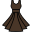

MODA
PRIMAVERA
A moda para a primavera de 2025 promete ser marcada por cores vibrantes, tons pastéis, tecidos delicados e peças confortáveis. Algumas das tendências para a estação são:
Cores: O laranja, o vermelho bem aberto, o verde em todas as suas variações, o amarelo manteiga, o rosa chá, o azul claro, o off-white, o nude, o caramelo e o branco.
Tecidos: O linho, o lese (tecido furadinho) e tecidos delicados com detalhes.
Estampas: O animal print.
Roupas: Peças leves, vestidos, saias, bermudas, roupas oversized, modelagens fluidas, batas elegantes, camisas.
Acessórios: Uma pitada de ousadia.
VERÃO
A moda para a verão de 2025 promete ser marcada por cores vibrantes, tons pastéis, tecidos delicados e peças confortáveis. Algumas das tendências para a estação são:
Cores: Tons como laranja intenso, verde lima e azul cobalto devem estar presentes em roupas, acessórios e sapatos.
Tecidos: Algodão, viscose.
Estampas: Estampas de flores grandes e folhagens com um ar vintage devem ser uma tendência.
Roupas: Peças mais amplas, como vestidos fluidos, calças pantalona e camisas oversized, devem estar em destaque.
Acessórios: Bolsas de palha, colares de conchas e braceletes feitos de madeira devem ser uma tendência.
OUTONO
A moda do outono 2025 promete ser versátil, com uma paleta de cores que vai dos tons terrosos aos metálicos, passando por tons de azul escuro e cores vivas surrealistas. Algumas das tendências para a estação são:
Cores: Tons terrosos e metálicos para aquecer o olhar.
Tecidos: As texturas também serão um destaque, com veludo, lã e couro ecológico dominando as passarelas. Os detalhes em tricô vão voltar e o jeans será repaginado, mais moderno e chique.
Estampas: Estampas Geométricas, estampas clássicas (listras e xadrez).
Roupas: Casacos felpudos para aconchego e glamour, peças de malha chamativas e clássicos com golas altas.
Acessórios: Relógios vintage (modelos antigos com mostradores elegantes e pulseiras de couro), acessórios com toque de rebeldia e bolsas vintage, peças clássicas de marcas renomadas, valorizadas por sua qualidade e história.
INVERNO
A moda do inverno 2025 promete ser versátil, com uma paleta de cores que vai dos tons terrosos aos metálicos, passando por tons de azul escuro e cores vivas surrealistas. Algumas das tendências para a estação são:
Cores: Cores Terrosas, quentes e neutras.
Tecidos: Clássicos (lã, caxemira e veludo), naturais (algodão e linho) e tecidos de luxo (peles Sintéticas, couro e vicuña).
Estampas: Estampas clássicas, naturais e geométricas.
Roupas: Casacos Longos: até os joelhos ou mais longos, com detalhes em pele ou lã. Jaquetas de Couro: clássicas ou com detalhes modernos. Vestidos Quentes: de lã, veludo ou tecidos pesados. Calças de Corte Reto: confortáveis e versáteis.Blusas de Sedução.
Acessórios: Chapéus: fedoras, panamás ou gorros. Luvas: de couro, lã ou tecidos técnicos.Cintos: largos ou finos, com detalhes em metal. Bolsas: grandes ou pequenas, com alças ou correias. Relógios: clássicos ou inteligentes..